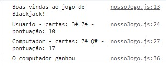

Projeto Blackjack
Este projeto se baseia no famoso jogo de cartas Blackjack, ou 21,
como é conhecido no Brasil. A ideia era utilizar o Javascript para fazer a
lógica do jogo, assim, aplicando todos os conhecimentos acerca dessa
tecnologia que tínhamos aprendido na semana.

Tecnologias utilizadas:

Você pode conferir mais detalhes
aqui.